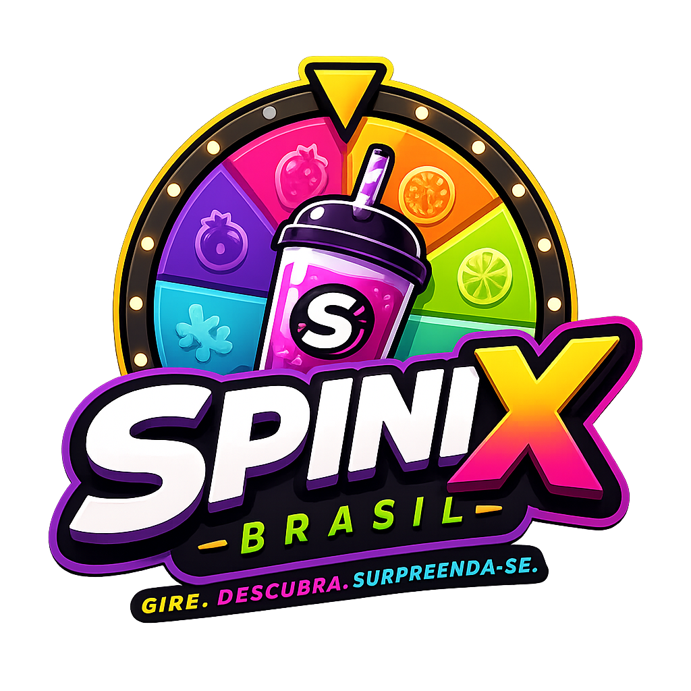
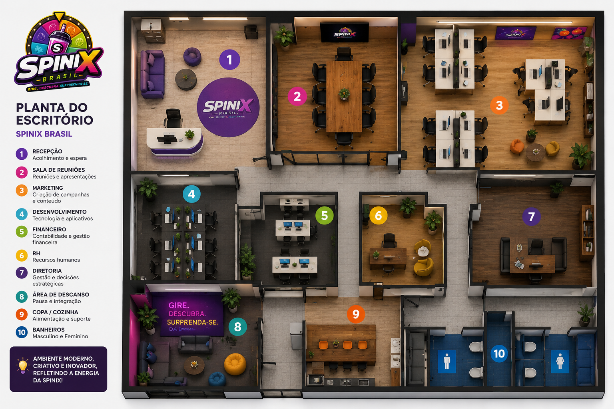

A SPINIX transforma bebidas e alimentos em uma experiência divertida e interativa através de uma roleta digital.
Conheça a SPINIX Roleta
A SPINIX BRASIL nasceu da vontade de transformar algo simples do dia a dia em uma experiência divertida,
surpreendente e compartilhável. Percebendo que os consumidores modernos buscam mais do que apenas produtos, seus
fundadores tiveram a ideia de unir bebidas, sabores exclusivos e tecnologia em um único conceito.
Tudo começou com a proposta de criar uma bebida acompanhada por uma experiência interativa. Através de uma
roleta digital, cada compra se tornaria única, permitindo aos consumidores descobrir novos
sabores, desafios e até recompensas especiais.
Os primeiros testes mostraram que a sensação de surpresa despertava a curiosidade das pessoas e tornava o
produto mais divertido, incentivando amigos e familiares a compartilharem a experiência nas redes sociais.
Assim, a SPINIX passou a ser muito mais do que uma marca de bebidas: tornou-se uma marca voltada para
entretenimento, colecionismo e inovação.
Inspirada pela criatividade, pela cultura brasileira e pelo potencial das experiências digitais, a SPINIX BRASIL
busca constantemente desenvolver novos sabores, edições especiais e formas de aproximar os consumidores da
marca.
Hoje, a SPINIX tem como objetivo transformar cada produto em um momento único, criando experiências
inesquecíveis e construindo uma comunidade de fãs que compartilham a emoção de girar, descobrir e se
surpreender.
Pessoas que buscam entretenimento, diversão e experiências interativas através das roletas e desafios da Spinix Brasil.
Usuários que gostam da emoção de descobrir prêmios, recompensas e experiências diferenciadas.
Pessoas conectadas às redes sociais e interessadas em novidades, conteúdo interativo e tecnologia.
Empresas, criadores de conteúdo e participantes de eventos que desejam proporcionar experiências mais divertidas e envolventes.
Refrigerantes, Sodas, Chás Gelados, Energéticos e Milkshakes.
Sorvetes, Chocolates e Cookies Spinix.
Caixas degustação e edições limitadas.
Roleta digital, desafios e sistema de fidelidade.

Conheça a estrutura do escritório da Spinix Brasil, projetada para proporcionar um ambiente moderno, criativo e colaborativo.